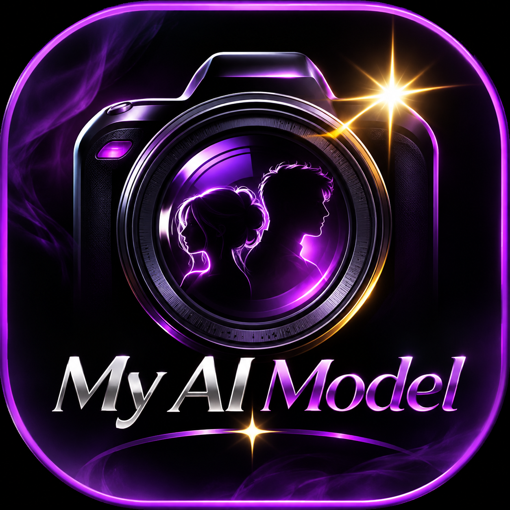

DEIN PRIVATES KI-FOTOSTUDIO · VERSION 4.3

My AI Model ✨
Stelle deine Szene zusammen. Das Referenzfoto fügst du später direkt bei ChatGPT oder Gemini hinzu.
🎨 Design & Sprache
📸 Fotoshooting-Studio
Plane ein zusammenhängendes Fotoshooting mit bis zu 20 individuellen Bildanweisungen. Die Bilder erzeugst du anschließend in ChatGPT oder Gemini.
Der Plan wird lokal erstellt. Es werden keine Fotos hochgeladen.
🎬 Szene gestalten
Alle Kategorien bleiben verfügbar. Wähle eine Vorlage, „Eigene Eingabe“ oder „Keine Vorgabe“.
📝 Bildanweisung
Wird bei jeder Änderung aktualisiert und lässt sich manuell bearbeiten.
Falls Kopieren nicht klappt: Im Textfeld lange drücken und „Alles auswählen“ → „Kopieren“.
🤖 KI öffnen
Bildanweisung kopieren, KI öffnen und dort Text und Referenzfoto einfügen.
ChatGPT öffnen ↗Gemini öffnen ↗